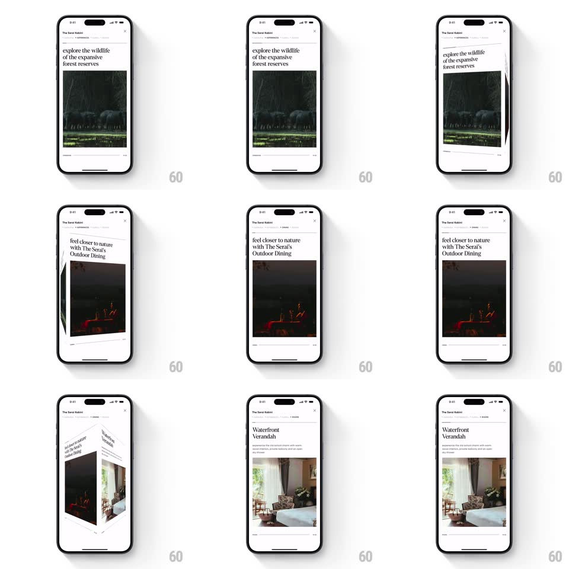

Media
Frame-by-frame

Rebuild this interaction 1:1: CRED Travel's story carousel - swiping rotates full-screen story cards like faces of a 3D cube, with the tab labels and progress bars at top advancing in sync.

Rebuild this interaction 1:1: CRED Travel's story carousel - swiping rotates full-screen story cards like faces of a 3D cube, with the tab labels and progress bars at top advancing in sync.
## Integration
Integration: stack-agnostic spec - springs given as stiffness/damping, timed motions as duration + curve; map every value to your framework and animation library of choice.
## Scene
White story viewer for "The Serai Kabini": a top row of tab labels with thin progress bars, a serif headline ("ride through the serene backwaters of Kabini"), and a full-width photo below; a close X top-right.
## Motion spec
Pattern: gesture-driven 3D cube card transition.
- Swipe: the drag rotates the current card around the screen's vertical center axis (rotateY 0 -> -90deg, perspective 1200px) 1:1 with the finger; the incoming card rotates in from the side face (rotateY 90 -> 0) so the pair reads as one cube turning.
- Depth: the receding face darkens slightly (black overlay 0 -> 25%) and the incoming face brightens as it flattens.
- Release: past 40% rotation, completes to the next card (spring ~300/24, 300ms); otherwise springs back (spring ~380/22).
- Sync: the active progress bar fills 1:1 with rotation progress and the tab label weight shifts to the destination mid-rotation.
- The headline and photo move as one rigid face - no parallax between them.
## Calibration
- Both faces share one vanishing point; the cube edge sits at the screen center.
- Progress indicators track rotation exactly, including on the spring-back.
## Reduced motion
Crossfade between cards (250ms); indicators still advance.
## Don't miss
- The rotation is a true shared-axis cube, not two slides.
- Tab emphasis switches at the halfway rotation, not on completion.